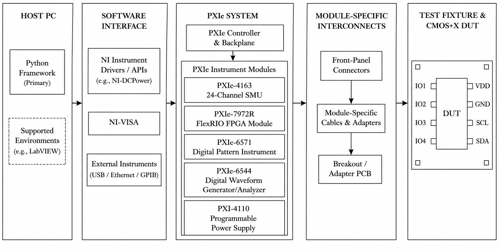
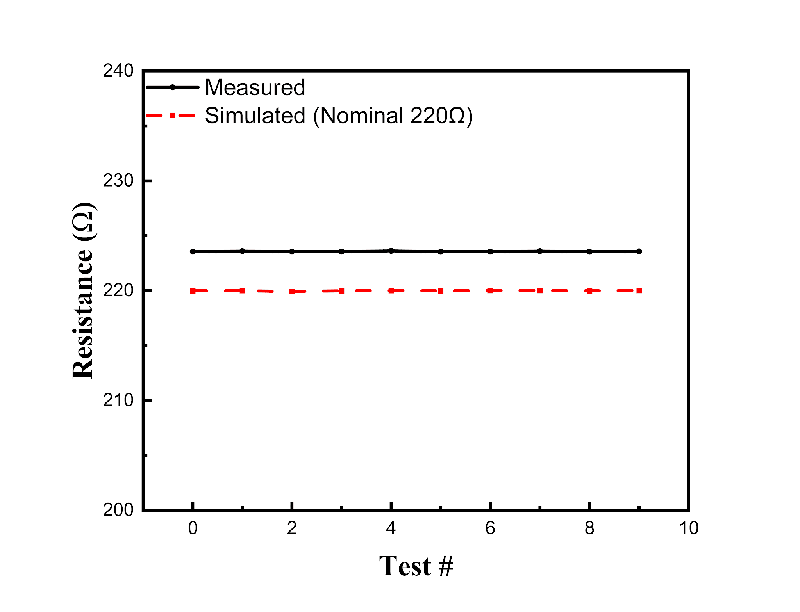

Characterization infrastructure
CMOS+X research combines conventional CMOS with emerging devices that can require different bias conditions, pulse sequences, and readout methods. I worked on a modular NI PXIe-based characterization platform and Python measurement framework to make those experiments configurable and repeatable.
The project formed part of my 2026 Summer Undergraduate Research Fellowship at Purdue’s NanoX Lab. It supports the broader effort to develop BEOL-compatible integration workflows for emerging devices on post-CMOS coupons.

My contribution
I built the measurement infrastructure and modular software framework, separating test configuration from low-level instrument-control logic. The workflow connects recipe configuration, execution, and recorded results, with simulation and hardware backends.
- Configuration-driven measurements. Recipes and instrument settings are separated from the execution logic so that test conditions can be changed without rewriting instrument drivers.
- Measurement execution and output. The framework organizes electrical measurements and their resulting data, plots, and logs.
- Initial hardware validation. I validated the SMU resistance-measurement path, establishing an experimental check of the hardware/software connection.
This work was conducted with guidance from Prof. Haitong Li and Zeshu Wang, as acknowledged in the SURF poster.

The diagram shows where experiment configuration meets instrument control and physical connectivity. Listing a module in the platform describes the intended measurement capability, while the repeated-resistance experiment below identifies the path already checked on hardware.
Validated scope & next stage
The poster reports ten repeated resistance measurements for the initial SMU experiment. The synaptic-update, RRAM I–V, and stochastic digital-timing examples in that poster are simulated demonstrations of intended workflows.

As of September 2026, the coupons are expected back soon. Testing the returned coupons is the next stage. No new coupon-level measurement result is claimed here. The next work connects the established platform to those devices and evaluates the relevant electrical behavior.
Research poster
View the SURF poster on GitHub ↗
Recognition: Purdue SURF with Distinction, Summer 2026.